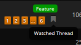

These are still two important things to me as well.
As for the signatures, the line that separates them from actual post should be more visible because now I have to glue my eyes to the monitor to see it.
And the red circle number of new posts in URL bar icon causes one small issue - the icon in Bookmarks keeps changing, but it’s not a big deal.
Two questions - First, is there a way to “unwatch” topics? I can’t find it on my own.
Second, the banner at the top of the page just changed for me - Is this something that happens randomly that the site does itself?
In a next round of updates, there will be a clear indication to unwatch topics, but within forum view, you will see a small “banner” mark which indicates you are watching that thread. Click it to toggle it off and you should be on your way.

This is something that will be happening randomly.
I’ve tried clicking the banner mark, but it doesn’t seem to do anything - when I refresh the page, it’s still there and still says the topic is Watched.
As for the top banner, d’oh, and here I was getting excited for imminent news too! 
Clicking the watched thread icon doesn’t work for me either, but I’ve found out that the following link will take you to a page which will show a list of all your watched threads:
https://forums.blackmesasource.com/index.php/WatchedThreadList/
And from there you can select all or any of the threads you wish to unsubscribe from and then click the “Unsubscribe…” button.
Tiny one with the new editor, you can’t CTRL+Right Arrow all the way to the end of the last word (the cursor stops at the beginning of it). Bit of a bugger if you go back and make changes while typing a lot.
Doesn’t having brighter signature text kinda distract a little bit from the posts that precede them? I feel like I scroll past a lot more posts here than I used to, which could either be what I’m saying or the fact that the text is darker in general. I dunno if it’s that significant, just how I feel.
Other than that, I guess it’s just preference, but I feel having stuff separated into big chunky blocks like this makes the site feel a bit more crowded as a whole. Again, it’s really inconsequential, and it’s really just most likely another sign of my affinity toward having everything on a single, non-scrollable page, but there’s just something about having all this space between posts that makes it feel like one of those chip-bags that’s like 80% air.
At the moment, you can’t get to that page via the current UI. I found out through other means. What I know is that there is supposed to be a navigation header at the top which has a link to the Watched Threads page, and when you are in thread view there is a button to manage subscription for the thread you are viewing. But this hasn’t been enabled in the UI. However, from Hubicorn’s post above, it looks like this is something that will be added to the UI in a future update.
How do I “watch” a thread?
I had to creat a new account unfortunately (previous account name: wayne_acoba), because I couldn’t receive a confirmation code. I guesse the reason for this is because I was registered with an email-adress which is now not valif anymore, so I couldn’t receive a new one. I sent two emails to the webmaster, but haven’t received a response as of yet. Might it be possible to send aconfirmation code to my new Email adress?
Please private message/conversation me your old username and I will be happy to assist you.
Yay! I got my old account back! thanks a bunch, catz! You’re an angel 
You are very welcome! Folks, if you hear of anyone having issues, as noted in the message when the login confirmation problem presents itself, you can either email the web administrator or contact us on Facebook. If one admin isn’t available at the time, normally another is available.
Hey, did we ever get a ‘mark forum as read’?
Double-click on the black mesa logo next to the forum you want to mark as read.
Wondering this also. I know commenting does, but I don’t want to comment on everything just to watch it.
Also clicking the banner in forum view on a ‘watched’ thread doesn’t unwatch it. Has that update just not come yet?
unwatching is clicking on another icon, somewhere to the right I believe.

I’m either really stupid and/or blind but I see nothing. There was nothing else to the right that was clickable.